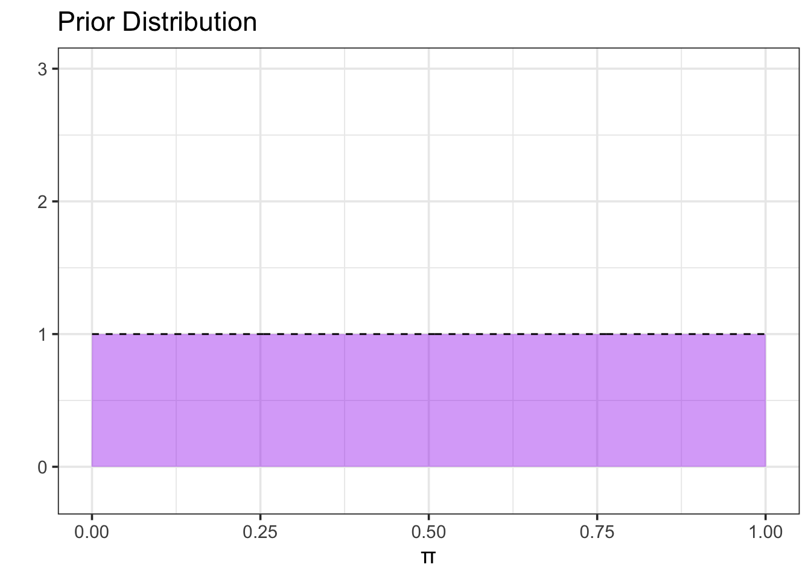
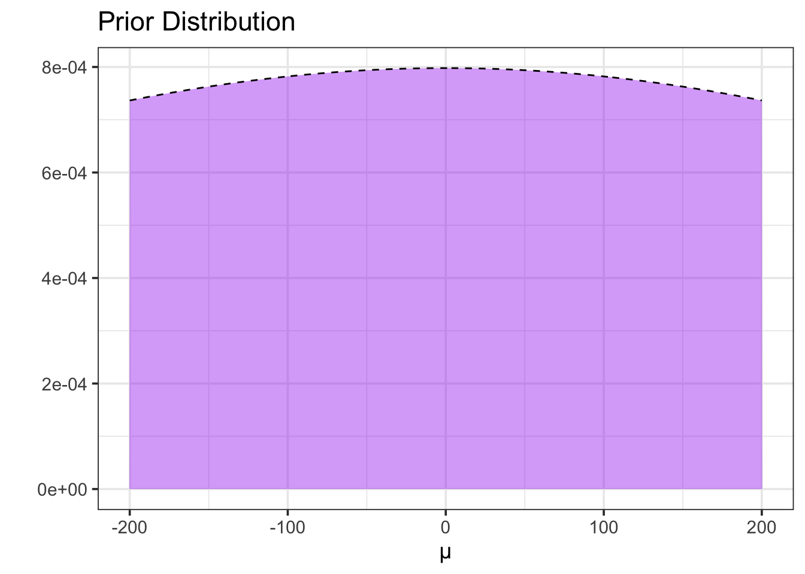
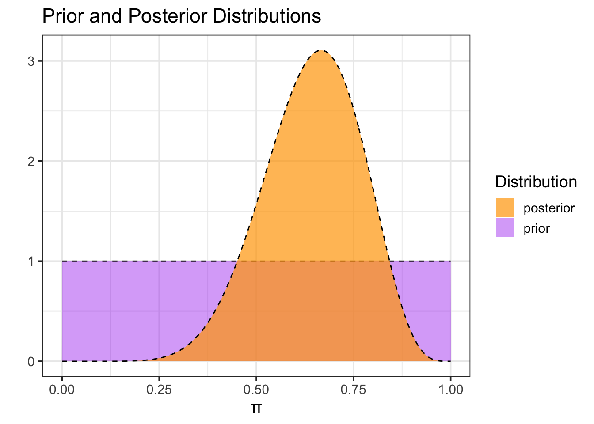

This document is set up to accommodate scenarios in which the parameter of interest is a mean. I’ve pushed this out of scope pending a follow up with Laura and Monika. It seems that obtaining the posterior distribution is more complex here because of the need to update both \(\mu\) and \(\sigma\).
About
Statistics Goals: The statistics-focused goals of this activity are as follows:
Introduce students to the foundational aspects of Bayesian Inference as an alternative to Frequentist methods.
In particular, students discover and examine what a parameter distribution is.
Students discover the notion and impact of the choice of a prior distribution on the resulting posterior parameter distribution.
Students discover the impact of amount of data on the resulting posterior parameter distribution.
Students experiment with how the choice of prior parameter distribution and data interact to influence the resulting posterior parameter distribution.
Course Objectives: This activity would map to course-level objectives similar to the following. Note that this is not an exhaustive list, nor should it be interpreted that objectives must be phrased identically. This is to give an idea as to the wide variety of contexts this activity might be placed in.
Students will evaluate a research question using appropriate statistical techniques
Students will correctly identify the type of data they are working with
Students will evaluate literature and/or prior research to generate hypotheses for a research question
Students will learn about different statistical models and approaches
Students will interpret coefficients from a statistical model
Students will evaluate the underlying assumptions of a statistical approach
Students will examine the ecological impact of different pathogens, both native and introduced
Students will consider the ethical implications of statistical approaches
Students will gather data using methodologies appropriate to the context
Subject-Area Objectives: This section will be utilized to identify objectives/outcomes specific to the course/subject to which the activity context is linked. This allows adopters to cover both objectives associated with their course as well as embedding Bayesian thinking.
Background Information
The following subsections outline the background information for this activity from both a statistics and domain-specific lens.
Data Analysis and Bayesian Thinking
There are many statistical tools which can be used to test hypotheses about population parameters. Broadly speaking, these tools fall into three categories:
Classical/Frequentist methods
Simulation-based methods
Bayesian methods
Perhaps you’ve encountered frequentist methods previously. These methods depend on distribution assumptions and the Central Limit Theorem. In this notebook, we’ll introduce Bayesian methods. In particular, you’ll explore how your prior belief (controlled via your choice of prior distribution) and the strength of your observed data work together to produce updated beliefs (a posterior distribution).
In Bayesian inference, we approach our tasks with some prior belief about the value of our population parameter. This is natural, because it matches our lived experience as humans. We use that prior belief, in conjunction with our data, to produce an updated version of our beliefs. Again, likely matching our individual approaches to interacting with the world we live in.
In this interactive notebook, you’ll see the Bayesian approach to inference on a [choose the parameter relevant to the context: (population proportion / population mean)] in action. You’ll explore how your prior belief (controlled via your choice of prior distribution) and the strength of your observed data work together to produce updated beliefs.
About the Context
This subsection includes background on the domain-specific context for the activity.
Purpose
Let’s try to estimate the [population parameter in context].
Prior Assumptions
A paragraph indicating the assumptions we might come with if we had no prior expectations about our parameter. The end result here should be that we land on a uniform or completely uninformative (large \(\sigma\)) normal prior.
Question: Is it necessary that we begin from a uniform prior? I think, for illustration purposes, it is helpful.
Navigating the Outline
Use the tabs below to choose which outline to view. The tab relevant to your potential activity depends on whether your variable of interest is categorical (proportions) or numerical (*means).
The code chunk below sets up an uninformative uniform prior for the population proportion being estimated.
alpha <-1beta <-1#Fewer points results in more jagged picturesgrid_pts <-500#Create prior distribution my_dists_prop <-tibble(pi =seq(0, 1, length.out = grid_pts), #possible proportion valuesprior_prob =dbeta(pi, alpha, beta) #prior probability)#Plot prior distributionmy_dists_prop %>%ggplot() +geom_area(aes(x = pi, y = prior_prob), fill ="purple", alpha =0.4) +geom_line(aes(x = pi, y = prior_prob),linetype ="dashed") +labs(title ="Prior Distribution",x ="π",y ="" ) +ylim(c(-0.2, 3))

Shape of Prior (Proportion)
The Beta-distribution we use here is commonly used with binomial data. It is determined by two shape parameters alpha (\(\alpha\)) and beta (\(\beta\)). We can think of \(\alpha\) as the number of previously observed successes and \(\beta\) as the number of previously observed failures. Choosing \(\alpha = 1\) and \(\beta = 1\), results in a prior that allows for both successes and failures (\(\pi \neq 0\) and \(\pi \neq 1\)) but which has no other certainty about the true value of \(\pi\).
The code chunk below sets up a very uninformative normal prior. The prior is uninformative due to the very large standard deviation. We’ll want to make slight adjustments to mean_initial and sd_initial so that they are reasonable in the context of the developed activity.
mean_prior <-0sd_prior <-500#Fewer points results in more jagged picturesgrid_pts <-500#Create prior distribution my_dists_mean <-tibble(mu =seq(-200, 200, length.out = grid_pts), #possible proportion valuesprior_prob =dnorm(mu, mean_prior, sd_prior) #prior probability)#Plot prior distributionmy_dists_mean %>%ggplot() +geom_area(aes(x = mu, y = prior_prob), fill ="purple", alpha =0.4) +geom_line(aes(x = mu, y = prior_prob),linetype ="dashed") +labs(title ="Prior Distribution",x ="µ",y ="" )

Shape of Prior (Mean)
Normal priors are common (verify with Laura and Monika) choices for numeric variables. The particular prior here is uninformative due to the mean being 0 and the large standard deviation.
Observed Data
In this section, we either generate, read, or collect data which we’ll use to update our chosen prior distribution.
Navigating the Outline
Similar to the previous section on Prior Assumptions, this section contains two separate tabs for convenient navigation. The Activities on Proportions tab is relevant to activities where the variable of interest is categorical and the tab on Activities on Means is relevant for activities with a numeric variable of interest.
The code chunk below is a placeholder which simulates new observed data from our population. There are several options for how this section on Observed Data can be treated.
Observed data can be simulated, as in the code chunk below.
Observed data can be read in from a location on the web (for example, a GitHub repository). This could be data from a study, a publication, your own research, etc.
Observed data can be collected in class and input via the code chunk.
nobs <-12set.seed(071524)my_data <-tibble(obs_id =1:nobs,status =sample(c("yes", "no"), size = nobs,prob =c(0.7, 0.3), replace =TRUE))num_yes <- my_data %>%filter(status =="yes") %>%nrow()print(paste0("Of the ", nobs," observations, the number of positive responses was ", num_yes,"."))
[1] "Of the 12 observations, the number of positive responses was 8."
The code chunk below is a placeholder which simulates new observed data from our population. There are several options for how this section on Observed Data can be treated.
Observed data can be simulated, as in the code chunk below.
Observed data can be read in from a location on the web (for example, a GitHub repository). This could be data from a study, a publication, your own research, etc.
Observed data can be collected in class and input via the code chunk.
nobs <-12set.seed(071524)my_data <-tibble(obs_id =1:nobs,value =rnorm(nobs, 60, 10))samp_mean <- my_data %>%summarize(my_mean =mean(value)) %>%pull(my_mean)print(paste0("From the ", nobs, " observations, the sample average was ", samp_mean, "."))
[1] "From the 12 observations, the sample average was 60.0807153241534."
Obtaining the Posterior
Now we’ll use our data to update the prior distribution and obtain the posterior distribution for our population proportion. We obtain the posterior distribution by multiplying the prior by the likelihood function and then dividing by a normalizing factor to ensure that the result is a probability density (that is, the total probability is 1). The likelihood measures the probability of observing our data at each possible value of the population proportion.
The code chunk below constructs the posterior distribution according to the Bayesian-Updating procedure above.
#Construct the posteriormy_dists_prop <- my_dists_prop %>%mutate(#Compute likelihood using binomial distributionlikelihood =choose(nobs, num_yes)*pi^(num_yes)*(1- pi)^(nobs - num_yes), #Compute posterior as likelihood*priorpost_prob = likelihood*prior_prob,#Normalize posteriorpost_prob_normalized = post_prob/(sum(post_prob)*1/grid_pts))#Plot prior and posteriormy_dists_prop %>%ggplot() +geom_area(aes(x = pi, y = prior_prob, fill ="prior"), alpha =0.4) +geom_line(aes(x = pi, y = prior_prob),linetype ="dashed") +geom_area(aes(x =pi, y = post_prob_normalized, fill ="posterior"), alpha =0.7) +geom_line(aes(x = pi, y = post_prob_normalized),linetype ="dashed") +labs(title ="Prior and Posterior Distributions",x ="π",y ="",fill ="Distribution" ) +scale_fill_manual(values =c("prior"="purple", "posterior"="orange"))

Notice that, after seeing the data, our posterior estimate for the proportion of [insert context here] has been updated. [We’ll summarize what we are seeing here, or ask the students to do that via a question in this location.]
The code chunk below constructs the posterior distribution according to the Bayesian-Updating procedure above.
This update is more complex, since we have two parameters to estimate for the distribution of the mean. Our setup is something like: \[\begin{align} y &\sim N\left(\mu, \sigma\right)\\ \mu &\stackrel{\text{prior}}{\sim} N\left(0, 500\right)\\ \sigma &\stackrel{\text{prior}}{\sim} \text{Exponential}\left(1\right)\end{align}\]Check with Monika and Laura to verify, but I’m pushing this “out of scope” for now since I believe it requires sampling.